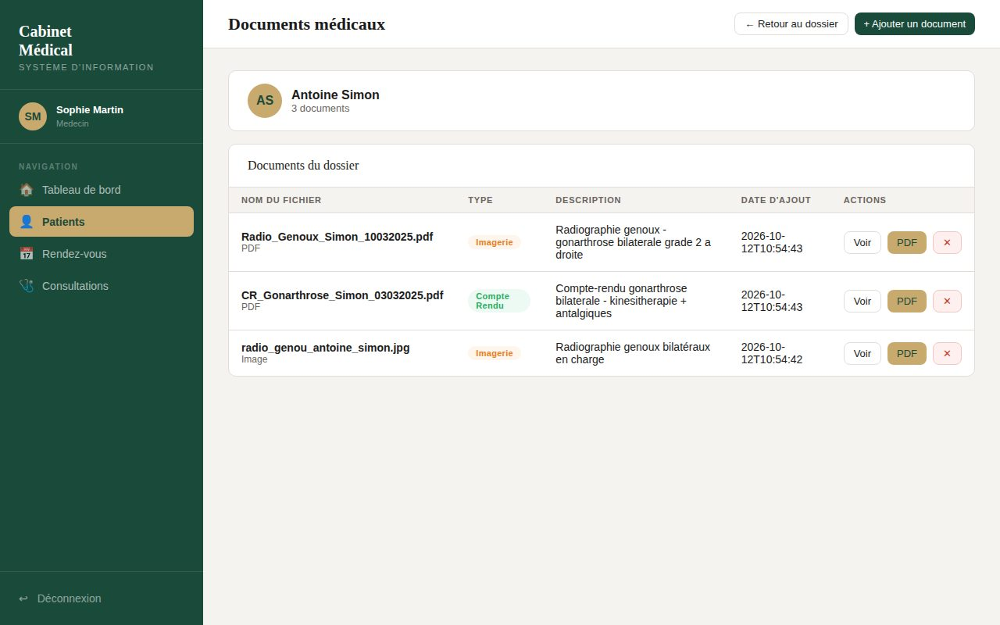
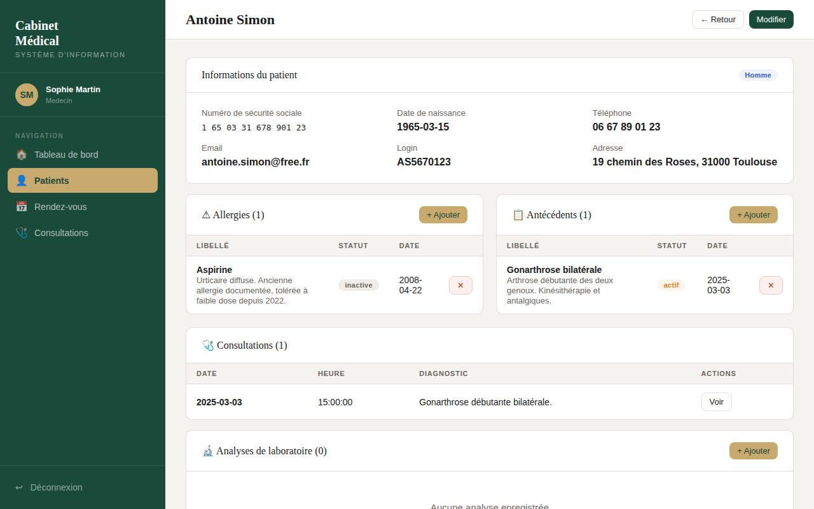
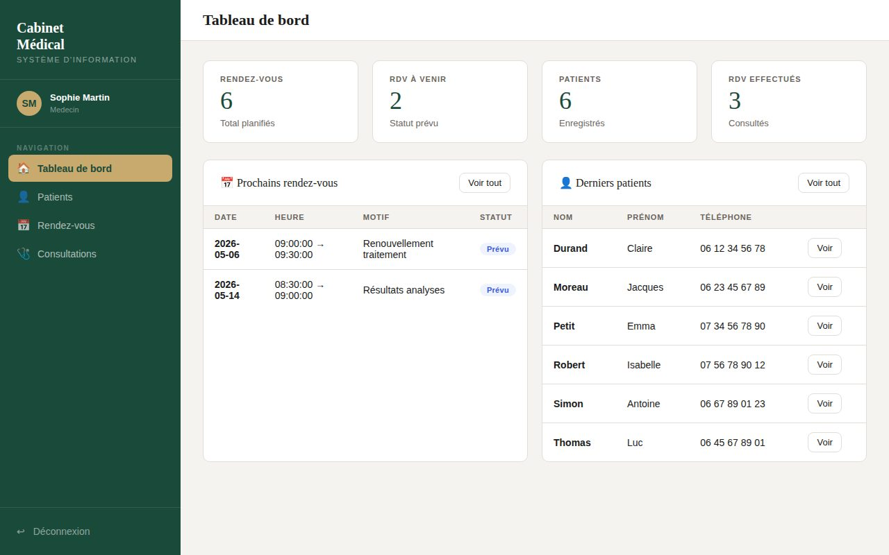
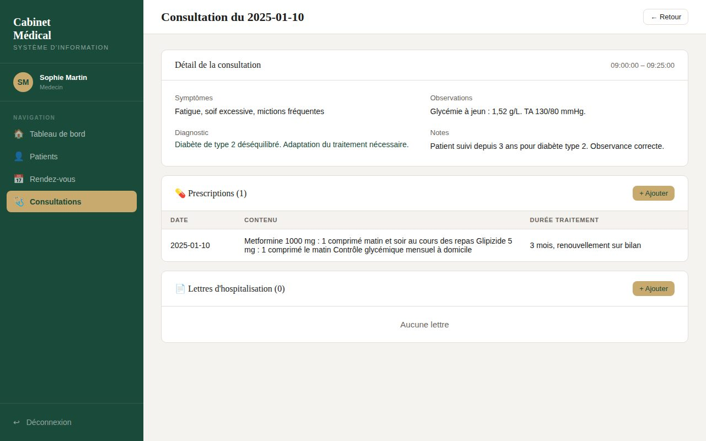
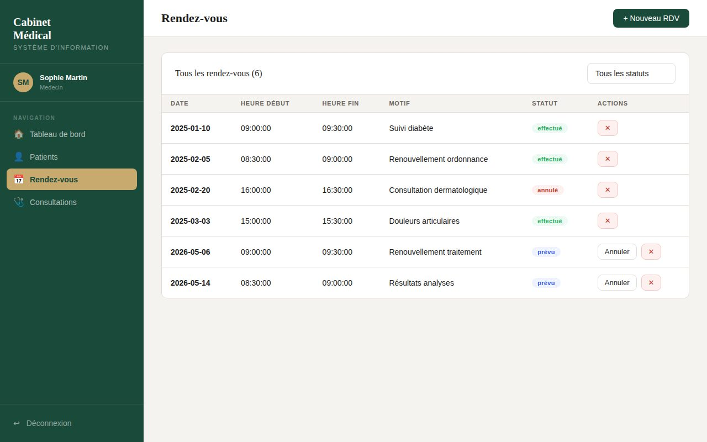
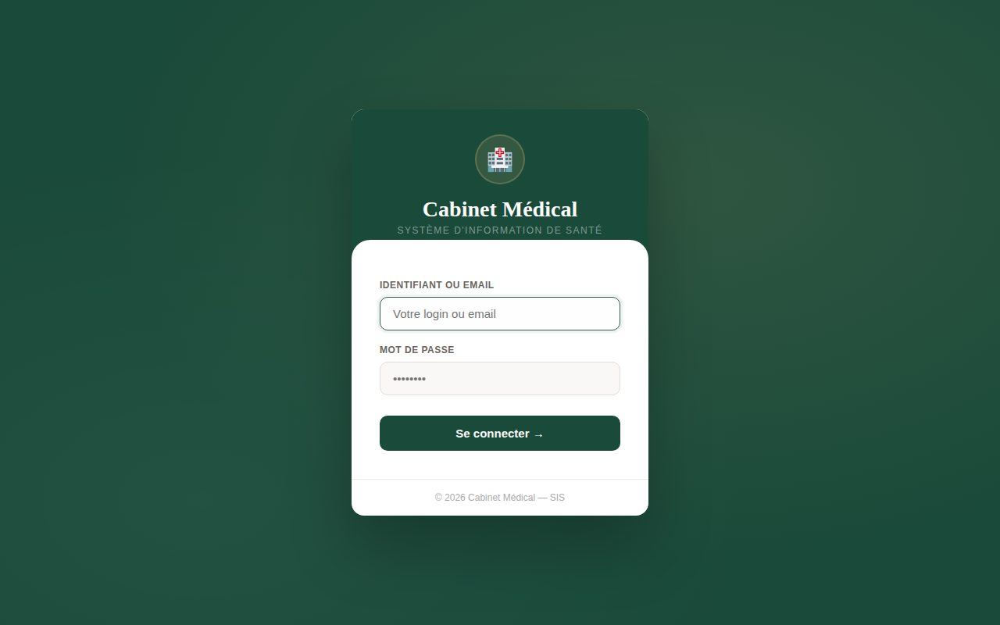

Projet universitaire en groupe de trois · EIJV · avril – mai 2026
Le projet s'est déroulé en deux temps. D'abord la conception UML du système d'information : cahier des charges, modèle conceptuel de données, diagramme de cas d'usage et diagrammes de séquence pour les parcours de prise de rendez-vous et de consultation. Ensuite le développement d'une application web de gestion d'un cabinet médical de ville : dossiers patients, rendez-vous, consultations, prescriptions, lettres d'hospitalisation, allergies, antécédents, analyses de laboratoire et documents médicaux. L'application est découpée en trois services : une base MariaDB, une API REST en Flask sécurisée par jeton JWT, et une interface web Flask qui consomme cette API. L'ensemble se lance avec une seule commande Docker Compose.
Document, routes d'API (téléversement, consultation, suppression, conversion d'une image en PDF) et page de l'interface. Les fichiers sont limités aux formats PDF, PNG et JPG, et stockés sous un nom aléatoire.L'API principale et l'interface ont été réalisées par les deux autres membres du groupe.
Captures réalisées en lançant l'application sur le jeu de données de test. Tous les patients, médecins et documents sont fictifs.






Les droits sont vérifiés côté API, route par route : par exemple, seul le médecin peut créer une consultation ou une prescription. Les mots de passe sont stockés hachés (Werkzeug).
Projet académique sur données fictives, lancé en local. Ce n'est pas un logiciel déployé en cabinet : il n'a ni hébergement certifié HDS, ni connexion aux référentiels nationaux (INS, DMP), ni audit de sécurité. Les comptes patients existent dans le modèle de données, mais l'espace patient n'a pas été développé.
Télécharger le code ↓